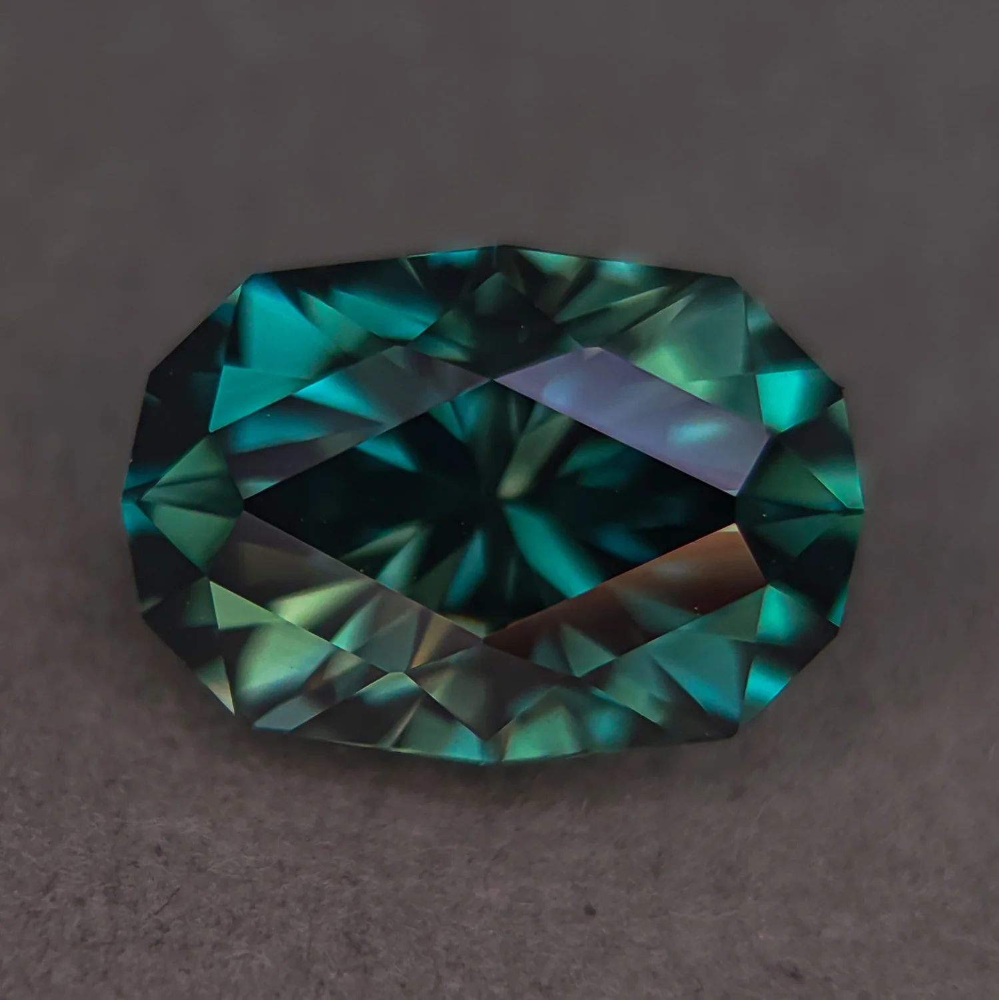
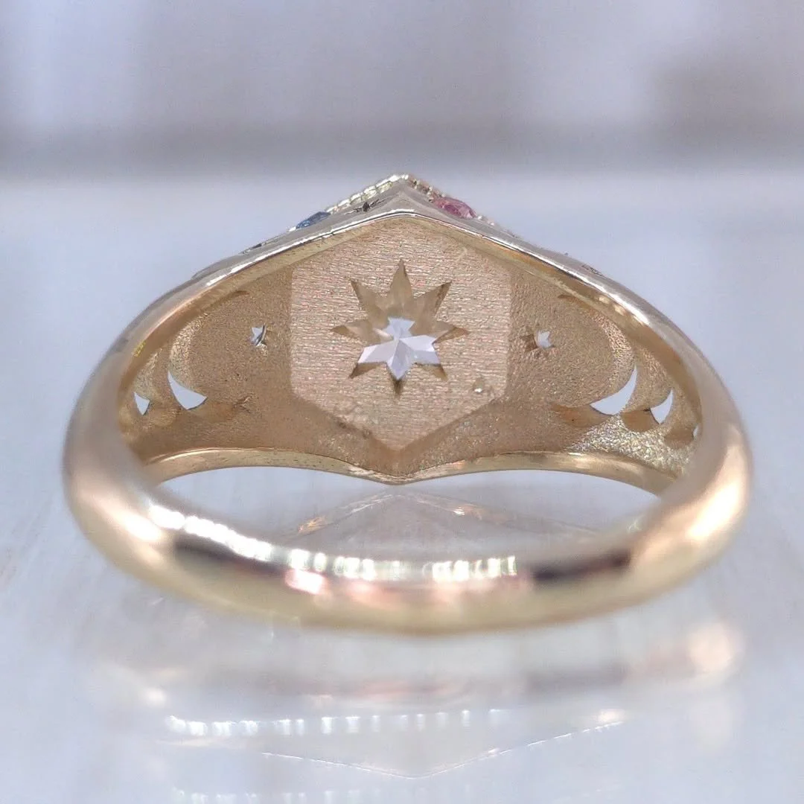

How Rana works.
Custom gem cuts, made-to-order designs, and classic settings — plain facts, not a brochure.

Most pieces begin with the stone. Rana usually chooses or cuts the gem first, and that stone is sold separately from its setting. When you want something modified or fully custom, the work starts with a conversation — not a cart.
Custom metal work is gold or platinum. Rana does not offer custom silver. Casting is done in the USA. Rana sets the center stone herself; on classic settings, specialist setters place the melee and accent stones.

What it costs and takes
Custom cutting begins at $300. Common cuts often fall between $300 and $1,500 or more, depending on the stone and the work. Finished jewelry commonly lands around $800 to $3,500, shaped by design, metal weight, and the gem.
Cutting itself often takes five to ten hours. The queue for cutting is usually two to four weeks. Made-to-order jewelry often takes four to eight weeks from agreement to delivery.
Client-supplied rough is not accepted. Recycled gold is available across a broad range of karats and colors.
Boundaries
Custom and made-to-order work is final sale. Other eligible returns carry a 10% restocking fee and must be shipped back within 72 hours.
For six months after custom delivery, Rana addresses problems with her work itself. Loss and theft sit outside that boundary. Later repairs are considered case by case. This is not insurance, and it is not a lifetime guarantee.
Live-site terms govern any live order. This page only explains the current public picture so you can decide whether to continue.
Where does a custom piece begin?
With a consultation. You choose a direction for the stone and the setting; Rana does not treat custom work as a ready-to-ship inventory item.
Who works on the stones and metal?
Rana cuts center stones and sets them. Casting is USA-based. Specialist setters place melee and accent stones on classic settings.
Can I send my own rough?
No. Client-supplied rough is not accepted.
What metals are available for custom work?
Gold or platinum for custom metal work. Custom silver is not offered. Recycled gold is available in a wide range of karats and colors.
What if something goes wrong after delivery?
For six months after custom delivery, problems with Rana’s own work are addressed. Loss, theft, and later wear are handled separately; later repairs are case by case.
When you are ready: begin a consultation, browse ready work, or look at made-to-order designs.
Current live services page: ranalevyjewelry.com/services.